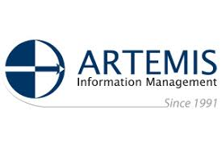
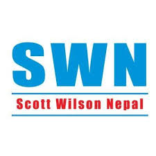

Our Portfolio
Bibhuti Bista – research and consulting services aim to demonstrate our work's scope, creativity, and effectiveness for different clients across different thematic areas.


PROFESSIONAL JOURNEY
2020 – 2025
Leadership, Strategic Advisory & Multicountry Consultancy
Employment:
- CEO, NESAF Nepal | 2019–2024 | Leadership, strategy, finance, HR, international partnerships, fundraising, proposal writing
- Head, Programs & Research Unit, DEVCOM Bangladesh | 2020–2023 | Led program design, research portfolio, partnerships & strategic expansion.
Highlighted Consultancy & Project Leadership:
2025:
- WWF Nepal | Indigenous arts scoping; social safeguard | Team Leader
- Tdh Germany | Youth/NBS Evaluation (Nepal/Pakistan/India) | Team Leader
- CWISH | Midterm evaluation My Right My Future | Team Leader
- Learn Infinity | M&E, logframe, results chain design | Consultant
- The Freedom Fund | Endline study (Haruwa–Charuwa) | Professional Lead
- Community Action Nepal/SWC | Final Evaluation HELI Programme | Team Leader
- WWF Nepal | Final Evaluation HELI Programme | Team Leader
- ZSL Nepal | M&E and communication strategy | M&E Expert
2024:
- Stromme Foundation/SWC | Final evaluation SEEDS | Team Leader
- Stromme Foundation/NESAF | BELIEF baseline & mental health | Team Leader
- WWF Nepal | Post KAP Tiger Recovery Complex | Team Leader
- Artemis Info Management Luxembourg | Evaluation of 8 NGOs | Senior Evaluator
2023:
- Karuna Foundation/SWC | Midterm evaluation DPRP | Team Leader
- FCA/NESAF | EWESI baseline (Women Entrepreneurship) | Team Leader
- HDCS/NESAF | MCH endline & baseline | Team Leader
- Wereld in Woorden/ResultsinHealth | RHN2 midterm review (Girls, LGBTQ+) | National Consultant
- Wereld in Woorden | MSC documentation | National Consultant
- HDCS/NESAF | WALI II & III endline/baseline | Team Leader
- Safa Sunaulo Nepal/SWC | School Reconstruction Evaluation | Team Leader
- TDH Netherlands | Child Online Sexual Exploitation Baseline | Team Leader
2022:
- CIPE USA | Nepal Cumulative Assessment | Consultant
- Swiss Development Cooperation | Socio-economic monitoring of bridges | Team Leader
- SathSath | External evaluation BRIDGE project | Team Leader
- WWF Nepal | KAP & income assessment tool | Consultant
2021:
- Dan Church Aid | Midterm review PARIWARTAN | Consultant
- TDH/NESAF | COVID-trafficking impact study | Team Leader
- Habitat for Humanity/NESAF | Market analysis (Shelter/PwD) | Team Leader
2020:
- American Red Cross/NESAF | PASCHIM & PREPARE baselines | Team Leader
2020 (multiple organizations):
- PPPC, Provincial Government Gandaki/NESAF | Model village study | Quality Assurance Advisor
- Good Neighbors International/NESAF | Integrated Rural Development Project baseline study | QA Advisor / Baseline Expert
- WWF Nepal/MIRRA | Biogas installation & revolving fund impact evaluation | Expert
- WeWorld/SWC | Community Participation for Education and Child Protection project | Team Leader / Program Expert
2015 – 2019
Evaluation & Mixed-Portfolio Consulting
Employment:
- Research Coordinator, Terre des Hommes Nepal | 2016–2017 | CSEC research lead with Griffith University & Hong Kong University.
- Country Evaluator, Search for Common Ground Nepal | 2014–2015 | Youth peacebuilding evaluation; national peace album & case studies.
Highlighted Consultancy:
2019:
- YHDO Afghanistan | Evaluation / Endline Survey | International Lead
- VSO Nepal | MEAL Strategy | Consultant
- Nepal Youth Foundation/SWC | Final Evaluation | Program Expert | Lead
- Stromme Foundation/MITRA | Baseline / Evaluation | Baseline Expert
- SFCG/LEAD Intl. | Surveys & Evaluations | Evaluation Expert
2018:
- SFCG | Impact Evaluation | Team Leader
- WWF Nepal | GESI & DRR Evaluation | Team Leader
- Stromme Foundation/MITRA | Process Documentation / Evaluation | Team Leader
2017:
- Save the Children | Access & HIV Prevention Research | International Consultant
- Griffith University / University of Hong Kong | CSEC Research | Researcher
2016:
- SFCG | Youth Violence Evaluation | Lead
- UMN | Revolving Fund Management Evaluation | Consultant
- Practical Action | ICS / DRR / WASH Evaluation | Consultant
- Good Neighbors International/SWC | Community Development Evaluation | Program Expert | Lead
2015:
- UNDP/UNPFM | Youth as Contributors to Peace | Program Expert
- Practical Action/MITRA | WASH / Infrastructure Evaluation | Lead
- SFCG | Peacebuilding & Youth Engagement Evaluation | Lead
- UN Women/SFCG | Women Empowerment Evaluation | Consultant
- JICA/NESAF | Post-Earthquake Rehabilitation Evaluation | Consultant / Lead
- UMN | Livelihood / PLHIV / Person with disabilities | Program Expert / Lead
- APEIRON ONLUS/SWC | Didi Bahini Project Evaluation | Program Expert / Lead
2010 – 2014
Research, International Teaching & Quality Systems
Employment:
- Researcher, Åbo Akademi University Finland | 2011 | Lectures, research papers, seminars in development sociology.
- Quality Manager, NBPA/GIZ Nepal | 2010 | QMS development, logframes, climate finance, M&E.
- Senior Program Officer, NBPA Nepal | 2008–2010 | Program design, implementaiton, M&E, networking, capacity building, advocacy, private sector
- Program Officer, NBPA Nepal | 2007–2008 | Program coordination, research, M&E
Highlighted Consultancy:
2014:
- Child Rights Foundation Cambodia | Child-Friendly Learning Environment Evaluation | Lead Analyst
- Back to Life e.V/SWC | Child-Friendly Model Village Evaluation | Lead Analyst
- Development Fund Norway | Humla Development Initiative Mid-term Evaluation | Lead Analyst
- OXFAM | Promotion of Self-Help Initiative Evaluation | Lead Analyst
- PHASE Nepal | Organizational Assessment & Program Evaluation | Lead Analyst
- CARE/SWC | Migrant Women’s Rights Promotion & Protection Evaluation | Lead Analyst
2013:
- UN Women/MITRA | MP3W / Women & Politics Evaluation | Associate Evaluator
- Practical Action/MITRA | PRISM Mid-term Evaluation | Associate Evaluator
- AWO International/SWC | Rural Youth Development Program Evaluation | Team Leader / Program Expert
- JICA/MITRA | GeMSIP Endline Survey | Associate Evaluator
2012:
- YSESEF / Ministry of Finance | Youth Employment Market Survey | Researcher
2005 – 2009
Foundation Stage — Community Development & Field Work
Employment:
- Senior Program Office, Spiny Babbler Nepal | 2010 | Climate change, wetland, NRM, M&E, Report, community development, economic empowerment | ICIMOD/UNDP-GEF, community programs
- Program Office, Spiny Babbler Nepal | 2007–2010 | Climate change, wetland, NRM, M&E, Report, community development, economic empowerment | ICIMOD/UNDP-GEF, community programs
- Associate Program Office, Spiny Babbler Nepal | 2005–2007 | Climate change, wetland, NRM, M&E, Report, community development, economic empowerment | ICIMOD/UNDP-GEF, community programs
Consultancy / Field Highlights:
- Community development, M&E documentation, ICIMOD/UNDP GEF programme support.
- Foundation work in research, stakeholder engagement & development communication.